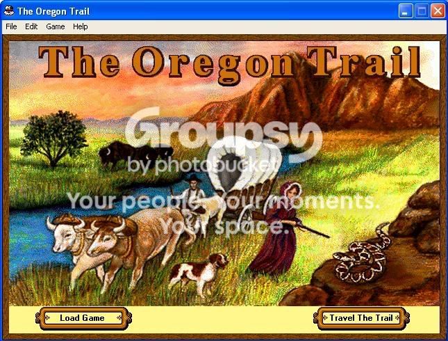
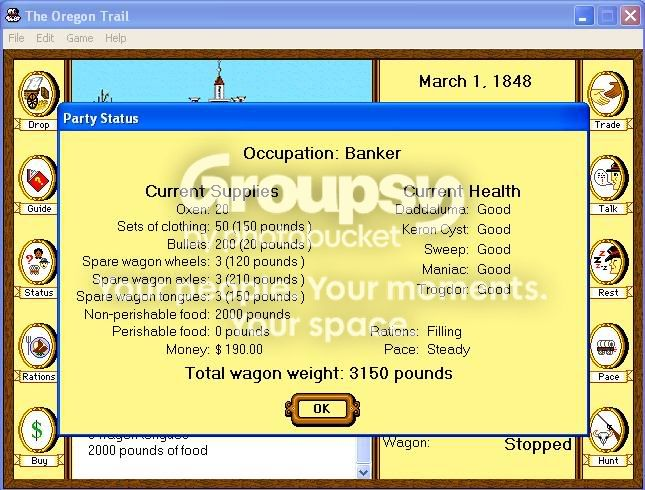
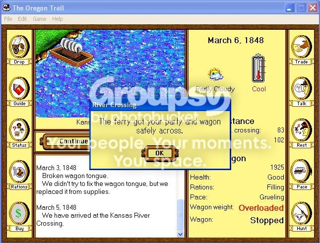
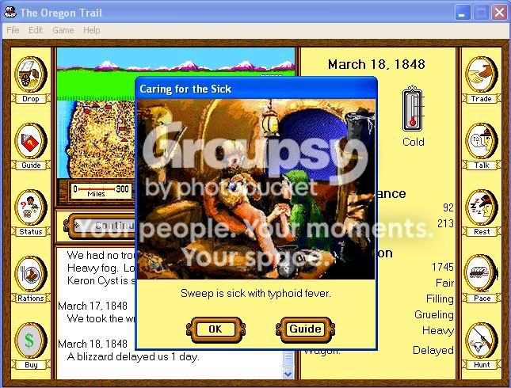
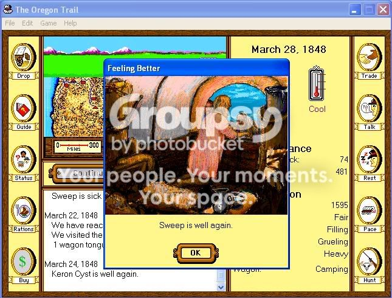
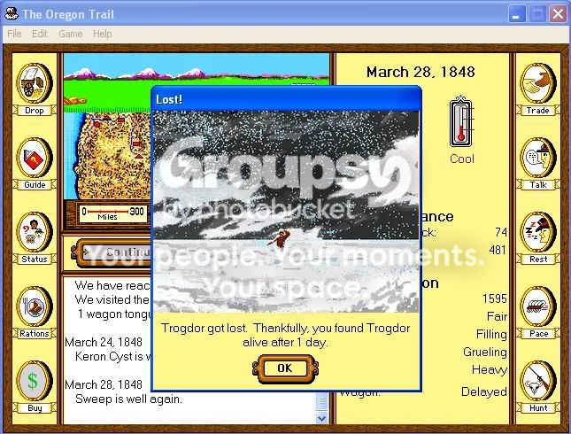
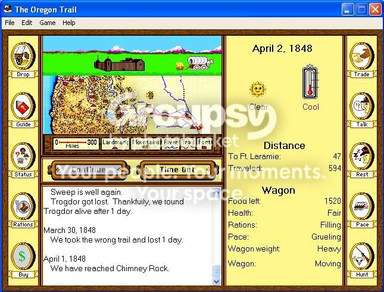

Welcome to the Oregon Trail!
Daddaluma, Keron Cyst, Sweep, Trogdor and Maniac Set out from . . . I forget where, let's say . . . Ohio. I bought the max of everything except bullets and then we were off. Although it says we were at a steady pace, I immediately rectified that and had us moving along at a more appropriate grueling pace.
We made it past that pesky first river with no problems
March 15th: Keron Cyst is Exhausted
March 18th: Sweep Has Typhoid! Oh no! But I refuse to be slowed down! Onward at the grueling pace!
March 24th: Keron gets better. Yokatta!
March 28th: Sweep gets better too. Yay!
But Trogdor gets lost. Boo. Luckily we find him quickly and get moving again.
April 2nd: Approaching Ft. Laramie, Where they make cigarettes.
To be continued . . .

Daddaluma, Keron Cyst, Sweep, Trogdor and Maniac Set out from . . . I forget where, let's say . . . Ohio. I bought the max of everything except bullets and then we were off. Although it says we were at a steady pace, I immediately rectified that and had us moving along at a more appropriate grueling pace.

We made it past that pesky first river with no problems

March 15th: Keron Cyst is Exhausted
March 18th: Sweep Has Typhoid! Oh no! But I refuse to be slowed down! Onward at the grueling pace!

March 24th: Keron gets better. Yokatta!
March 28th: Sweep gets better too. Yay!

But Trogdor gets lost. Boo. Luckily we find him quickly and get moving again.

April 2nd: Approaching Ft. Laramie, Where they make cigarettes.

To be continued . . .
 I once again ruthlessly refuse to slow down. Pressing every onward we are!
I once again ruthlessly refuse to slow down. Pressing every onward we are! Also note that we started out with 5 people and there are 6 people in that picture plus one person they just buried . . . making babies with my wife Keron. Oh Yeah!
Also note that we started out with 5 people and there are 6 people in that picture plus one person they just buried . . . making babies with my wife Keron. Oh Yeah! 


 We reach the majestic Pacific Ocean with a grand total of 1850 points. Congratulations to all those involved.
We reach the majestic Pacific Ocean with a grand total of 1850 points. Congratulations to all those involved.


![[link]](http://img.photobucket.com/albums/v307/tsukatu/bullshit.png){kind=link}